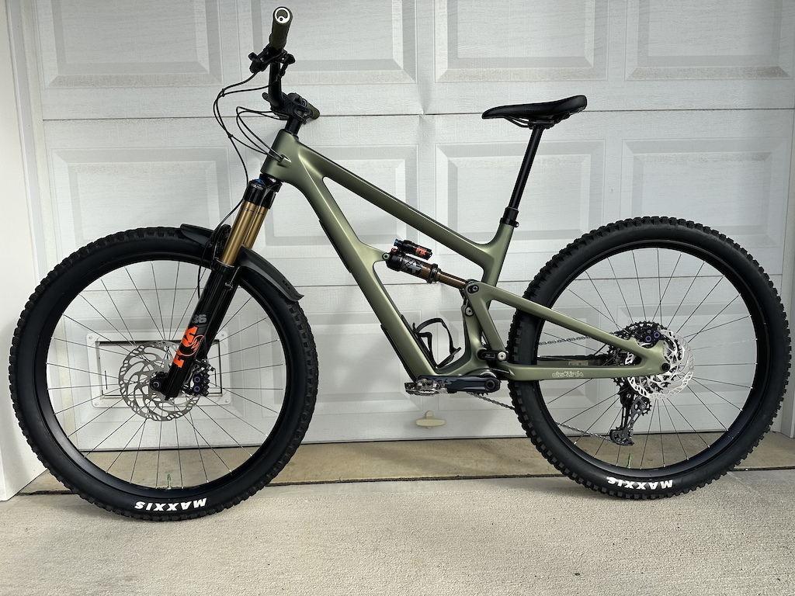

Cross country (XC) bikes
Cross country or XC bikes, are the lightest and nimblest type of mountain bikes. While modern XC bikes can handle some difficult terrain, their main purpose is to cover ground quickly on relatively mellow terrain. They may have both front and rear suspension, but "hardtail" bikes (bikes without rear suspension) are common in this class. Since they are the lightest type of mountain bike, they are also the easiest to ride when it comes to ascending long climbs. XC bikes tend to have steeper headtube angles and less suspension travel than other, more aggressive types of bikes. Pro XC riders are sometimes known as "dirt roadies" since they often have shaved legs and wear tight lycra like road cyclists.

Trail bikes
Trail bikes are the next class of bikes in terms of riding aggressive trails. A good trail bike can handle most terrain, although it may be slower and less comfortable on aggressive terrain than some of the other classes of bikes. For a lot of riders, trail bikes are the sweet spot: They pedal well, if not as efficiently as XC bikes, and they can handle most of the terrain riders are likely to encounter. They typically have more suspension travel and more durable components than XC bikes.
All mountain (AM) bikes
All mountain or AM bikes are the next step up in terms of aggressiveness. They are designed to handle more aggressive terrain than trail bikes, but they are still designed to be pedaled uphill. They typically have more suspension travel and more durable components than trail bikes, but they are not as heavy and sluggish as enduro or downhill bikes.

Enduro bikes
Enduro bikes are designed to handle the most aggressive terrain that riders are likely to encounter. They typically have more suspension travel and more durable components than All Mountain bikes, but they are not as heavy and sluggish as downhill bikes. Enduro bikes are designed to be pedaled uphill, but they are not as efficient as XC or trail bikes when it comes to climbing. They are called "enduro" bikes after the race format they were originally intended for: Enduro racing. In this format, riders must pedal to the top of the various stages, but only the downhill sections are timed. Therefore, these bikes need to be okay at pedaling but they are biased towards descending prowess.

Downhill bikes
Downhill bikes are the most aggressive type of mountain bikes. They are designed to handle the most difficult terrain that riders are likely to encounter, and they typically have the most suspension travel and the most durable components of any type of mountain bike. By the way, notice the different type of fork on the downhill bike in the picture. This is called a "dual crown" fork, and they only appear on downhill bikes. Downhill bikes are not designed to be pedaled uphill, specializing in lift-served or shuttled downhill tracks. In fact, it would be quite difficult to attempt climbing on a downhill bike! They are also the heaviest and slowest-pedaling type of mountain bike.

Video
Bonus! Here is a video of two all mountain bikes in action!
Contact
If you have any questions, comments, or ideas for future articles, please feel free to contact me using the form below: